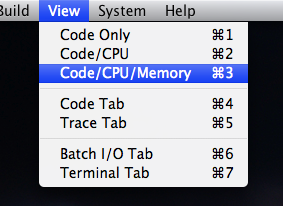

|
Debugging Programs |
The Pep/8 system provides debugging tools to help you locate errors in the programs you write. The tools include a memory dump, break points, a symbolic trace feature, and a byte converter.

Each line of the Memory Dump pane displays eight bytes